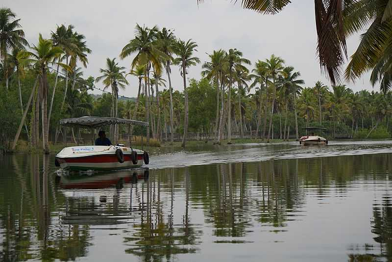

MAIN ATTRACTIONS
Neyyar Dam
Famous for its Lion and Deer Safari, Neyyar Wildlife Sanctuary is a treat for nature enthusiasts. The park houses a crocodile farm and elephant rehabilitation centre. Ask for a guided tour of the sanctuary which is quite informative.


Padmanabha swamy temple
One of the 108 Divya Desams, Sree Padmanabhaswamy Temple is located in Thiruvananthapuram, the capital city of Kerala. Embellished in gold-plated covering, the temple is opened only to Hindu followers. Dedicated to Lord Padmanabha; one of the avatars of Lord Vishnu, the Padmanabhaswamy Temple is one of the principal centres of Vaishnava worship in the dharma of Vaishnavism.
Poovar island
Poovar, a small coastal village along the natural harbour at Vizhinjam, is believed to have been the place called 'Ophir' where the ships of the biblical king Solomon had arrived. It was then an important center of trade for sandalwood, spices and timber.


Kanakakunnu palace
Close to the Napier Museum, the Kanakakunnu Palace was built under the rule of Travancore King. Today, the palace is host to plethora of cultural programs that are held on its premises.
Astronomical observatory
Situated on a hill at an elevation of about 60 metres above sea level (the highest point in the city), this astronomical observatory offers exquisite views of the surroundings and the city as a whole. Beautiful roses can be found in the garden in front. It was built in 1837 and is part of the Department of Physics, University of Kerala today. It is fast developing as one of India's most important astronomical centres with modern facilities like an 11-inch telescope, CCD camera, sun workstations, image processing facility and partnership with national programs.